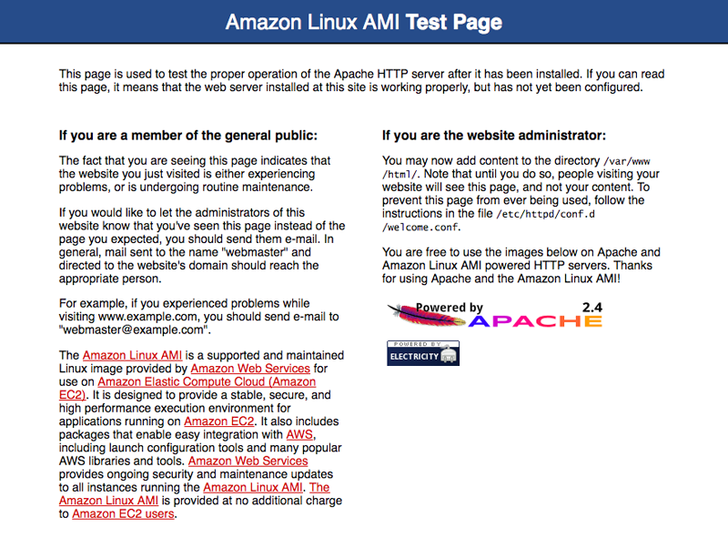
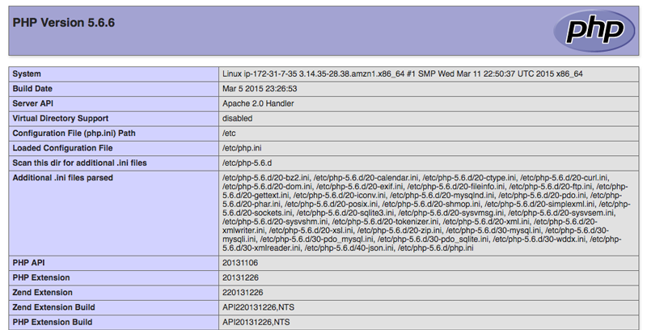
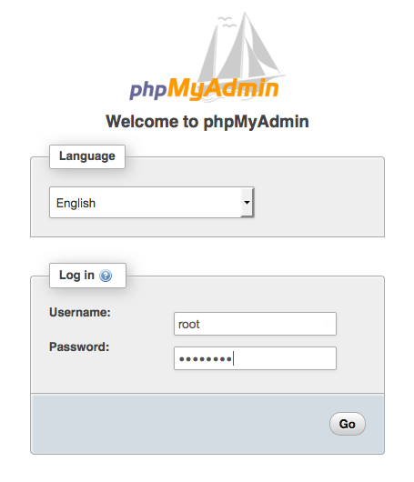

Tutorial: Install a LAMP Web Server with the Amazon Linux AMI
The following procedures help you install an Apache web server with PHP and MySQL support on your Amazon Linux instance (sometimes called a LAMP web server or LAMP stack). You can use this server to host a static website or deploy a dynamic PHP application that reads and writes information to a database.
To set up a LAMP web server on Amazon Linux 2, see Tutorial: Install a LAMP Web Server on Amazon Linux 2.
Important
If you are trying to set up a LAMP web server on an Ubuntu or Red Hat Enterprise Linux instance, this tutorial will not work for you. For more information about other distributions, see their specific documentation. For information about LAMP web servers on Ubuntu, see the Ubuntu community documentation ApacheMySQLPHP topic.
Prerequisites
This tutorial assumes that you have already launched a new instance using the Amazon Linux AMI, with a public DNS name that is reachable from the internet. For more information, see Step 1: Launch an Instance. You must also have configured your security group to allow SSH (port 22), HTTP (port 80), and HTTPS (port 443) connections. For more information about these prerequisites, see Setting Up with Amazon EC2.
To install and start the LAMP web server with the Amazon Linux AMI
-
To ensure that all of your software packages are up to date, perform a quick software update on your instance. This process may take a few minutes, but it is important to make sure that you have the latest security updates and bug fixes.
The
-yoption installs the updates without asking for confirmation. If you would like to examine the updates before installing, you can omit this option.[ec2-user ~]$sudo yum update -y -
Now that your instance is current, you can install the Apache web server, MySQL, and PHP software packages.
Note
Some applications may not be compatible with the following recommended software environment. Before installing these packages, check whether your LAMP applications are compatible with them. If there is a problem, you may need to install an alternative environment. For more information, see The application software I want to run on my server is incompatible with the installed PHP version or other software
Use the yum install command to install multiple software packages and all related dependencies at the same time.
[ec2-user ~]$sudo yum install -y httpd24 php70 mysql56-server php70-mysqlndNote
If you receive the error
No package, then your instance was not launched with the Amazon Linux AMI (perhaps you are using Amazon Linux 2 instead). You can view your version of Amazon Linux with the following command.package-nameavailablecat /etc/system-releaseTo set up a LAMP web server on Amazon Linux 2, see Tutorial: Install a LAMP Web Server on Amazon Linux 2.
-
Start the Apache web server.
[ec2-user ~]$sudo service httpd startStarting httpd: [ OK ] -
Use the chkconfig command to configure the Apache web server to start at each system boot.
[ec2-user ~]$sudo chkconfig httpd onThe chkconfig command does not provide any confirmation message when you successfully use it to enable a service.
You can verify that httpd is on by running the following command:
[ec2-user ~]$chkconfig --list httpdhttpd 0:off 1:off 2:on 3:on 4:on 5:on 6:offHere, httpd is
onin runlevels 2, 3, 4, and 5 (which is what you want to see). -
Add a security rule to allow inbound HTTP (port 80) connections to your instance if you have not already done so. By default, a launch-wizard-
Nsecurity group was set up for your instance during initialization. This group contains a single rule to allow SSH connections.-
Open the Amazon EC2 console at https://console.aws.amazon.com/ec2/.
-
Choose Instances and select your instance.
-
Under Security groups, choose view inbound rules.
-
You should see the following list of rules in your default security group:
Security Groups associated with i-1234567890abcdef0 Ports Protocol Source launch-wizard-N22 tcp 0.0.0.0/0 ✔Using the procedures in Adding Rules to a Security Group, add a new inbound security rule with the following values:
-
Type: HTTP
-
Protocol: TCP
-
Port Range: 80
-
Source: Custom
-
-
-
Test your web server. In a web browser, type the public DNS address (or the public IP address) of your instance. If there is no content in
/var/www/html, you should see the Apache test page. You can get the public DNS for your instance using the Amazon EC2 console (check the Public DNS column; if this column is hidden, choose Show/Hide Columns (the gear-shaped icon) and choose Public DNS).If you are unable to see the Apache test page, check that the security group you are using contains a rule to allow HTTP (port 80) traffic. For information about adding an HTTP rule to your security group, see Adding Rules to a Security Group.
Important
If you are not using Amazon Linux, you may also need to configure the firewall on your instance to allow these connections. For more information about how to configure the firewall, see the documentation for your specific distribution.
Note
This test page appears only when there is no content in
/var/www/html. When you add content to the document root, your content appears at the public DNS address of your instance instead of this test page.
Apache httpd serves files that are kept in a directory called the
Apache document root. The Amazon Linux Apache document root is /var/www/html,
which by default is owned by root.
[ec2-user ~]$ls -l /var/wwwtotal 16 drwxr-xr-x 2 root root 4096 Jul 12 01:00 cgi-bin drwxr-xr-x 3 root root 4096 Aug 7 00:02 error drwxr-xr-x 2 root root 4096 Jan 6 2012 html drwxr-xr-x 3 root root 4096 Aug 7 00:02 icons drwxr-xr-x 2 root root 4096 Aug 7 21:17 noindex
To allow the ec2-user account to manipulate files in this directory, you must modify the
ownership and permissions of the directory. There are many ways to accomplish this
task. In
this tutorial, you add ec2-user to the apache group, to give the
apache group ownership of the /var/www directory and
assign write permissions to the group.
To set file permissions
-
Add your user (in this case,
ec2-user) to theapachegroup.[ec2-user ~]$sudo usermod -a -G apacheec2-user -
Log out and then log back in again to pick up the new group, and then verify your membership.
-
Log out (use the exit command or close the terminal window):
[ec2-user ~]$exit -
To verify your membership in the
apachegroup, reconnect to your instance, and then run the following command:[ec2-user ~]$groupsec2-user wheel apache
-
-
Change the group ownership of
/var/wwwand its contents to theapachegroup.[ec2-user ~]$sudo chown -R ec2-user:apache /var/www -
To add group write permissions and to set the group ID on future subdirectories, change the directory permissions of
/var/wwwand its subdirectories.[ec2-user ~]$sudo chmod 2775 /var/www[ec2-user ~]$find /var/www -type d -exec sudo chmod 2775 {} \; -
To add group write permissions, recursively change the file permissions of
/var/wwwand its subdirectories:[ec2-user ~]$find /var/www -type f -exec sudo chmod 0664 {} \;
Now, ec2-user (and any future members of the apache group) can add,
delete, and edit files in the Apache document root, enabling you to add content, such
as a static website or a PHP application.
(Optional) Secure your web server
A web server running the HTTP protocol provides no transport security for the data that it sends or receives. When you connect to an HTTP server using a web browser, the URLs that you visit, the content of webpages that you receive, and the contents (including passwords) of any HTML forms that you submit are all visible to eavesdroppers anywhere along the network pathway. The best practice for securing your web server is to install support for HTTPS (HTTP Secure), which protects your data with SSL/TLS encryption.
For information about enabling HTTPS on your server, see Tutorial: Configure Apache Web Server on Amazon Linux to use SSL/TLS.
To test your LAMP web server
If your server is installed and running, and your file permissions are set correctly,
your ec2-user account should be able to create a PHP file in the
/var/www/html directory that is available from the
internet.
-
Create a PHP file in the Apache document root.
[ec2-user ~]$echo "<?php phpinfo(); ?>" > /var/www/html/phpinfo.phpIf you get a "Permission denied" error when trying to run this command, try logging out and logging back in again to pick up the proper group permissions that you configured in To set file permissions.
-
In a web browser, type the URL of the file that you just created. This URL is the public DNS address of your instance followed by a forward slash and the file name. For example:
http://my.public.dns.amazonaws.com/phpinfo.phpYou should see the PHP information page:
If you do not see this page, verify that the
/var/www/html/phpinfo.phpfile was created properly in the previous step. You can also verify that all of the required packages were installed with the following command. The package versions in the second column do not need to match this example output.[ec2-user ~]$sudo yum list installed httpd24 php70 mysql56-server php70-mysqlndLoaded plugins: priorities, update-motd, upgrade-helper Installed Packages httpd24.x86_64 2.4.25-1.68.amzn1 @amzn-updates mysql56-server.x86_64 5.6.35-1.23.amzn1 @amzn-updates php70.x86_64 7.0.14-1.20.amzn1 @amzn-updates php70-mysqlnd.x86_64 7.0.14-1.20.amzn1 @amzn-updatesIf any of the required packages are not listed in your output, install them using the sudo yum install
packagecommand. -
Delete the
phpinfo.phpfile. Although this can be useful information, it should not be broadcast to the internet for security reasons.[ec2-user ~]$rm /var/www/html/phpinfo.php
To secure the database server
The default installation of the MySQL server has several features that are great for testing and development, but they should be disabled or removed for production servers. The mysql_secure_installation command walks you through the process of setting a root password and removing the insecure features from your installation. Even if you are not planning on using the MySQL server, we recommend performing this procedure.
-
Start the MySQL server.
[ec2-user ~]$sudo service mysqld startInitializing MySQL database: ... PLEASE REMEMBER TO SET A PASSWORD FOR THE MySQL root USER ! ... Starting mysqld: [ OK ] -
Run mysql_secure_installation.
[ec2-user ~]$sudo mysql_secure_installation-
When prompted, type a password for the root account.
-
Type the current root password. By default, the root account does not have a password set. Press Enter.
-
Type
Yto set a password, and type a secure password twice. For more information about creating a secure password, see https://identitysafe.norton.com/password-generator/. Make sure to store this password in a safe place.Note
Setting a root password for MySQL is only the most basic measure for securing your database. When you build or install a database-driven application, you typically create a database service user for that application and avoid using the root account for anything but database administration.
-
-
Type
Yto remove the anonymous user accounts. -
Type
Yto disable the remote root login. -
Type
Yto remove the test database. -
Type
Yto reload the privilege tables and save your changes.
-
-
(Optional) If you do not plan to use the MySQL server right away, stop it. You can restart it when you need it again.
[ec2-user ~]$sudo service mysqld stopStopping mysqld: [ OK ] -
(Optional) If you want the MySQL server to start at every boot, type the following command.
[ec2-user ~]$sudo chkconfig mysqld on
You should now have a fully functional LAMP web server. If you add content to the
Apache
document root at /var/www/html, you should be able to view that content
at the public DNS address for your instance.
(Optional) Install phpMyAdmin
phpMyAdmin is a web-based database management tool that you can use to view and edit the MySQL databases on your EC2 instance. Follow the steps below to install and configure phpMyAdmin on your Amazon Linux instance.
Important
We do not recommend using phpMyAdmin to access a LAMP server unless you have enabled SSL/TLS in Apache; otherwise, your database administrator password and other data are transmitted insecurely across the internet. For security recommendations from the developers, see Securing your phpMyAdmin installation. For general information about securing a web server on an EC2 instance, see Tutorial: Configure Apache Web Server on Amazon Linux to use SSL/TLS.
Note
The Amazon Linux package management system does not currently support the automatic installation of phpMyAdmin in a PHP 7 environment. This tutorial describes how to install phpMyAdmin manually.
-
Log in to your EC2 instance using SSH.
-
Install the required dependencies.
[ec2-user ~]$sudo yum install php70-mbstring.x86_64 php70-zip.x86_64 -y -
Restart Apache.
[ec2-user ~]$sudo service httpd restartStopping httpd: [ OK ] Starting httpd: [ OK ] -
Navigate to the Apache document root at
/var/www/html.[ec2-user ~]$cd /var/www/html[ec2-user html]$ -
Select a source package for the latest phpMyAdmin release from https://www.phpmyadmin.net/downloads. To download the file directly to your instance, copy the link and paste it into a wget command, as in this example:
[ec2-user html]$wgethttps://www.phpmyadmin.net/downloads/phpMyAdmin-latest-all-languages.tar.gz -
Create a phpMyAdmin folder and extract the package into it using the following command.
[ec2-user html]$mkdir phpMyAdmin && tar -xvzfphpMyAdmin-latest-all-languages.tar.gz-C phpMyAdmin --strip-components 1 -
Delete the
phpMyAdmin-latest-all-languages.tar.gztarball.[ec2-user html]$rmphpMyAdmin-latest-all-languages.tar.gz -
(Optional) If the MySQL server is not running, start it now.
[ec2-user ~]$sudo service mysqld startStarting mysqld: [ OK ] -
In a web browser, type the URL of your phpMyAdmin installation. This URL is the public DNS address (or the public IP address) of your instance followed by a forward slash and the name of your installation directory. For example:
http://my.public.dns.amazonaws.com/phpMyAdminYou should see the phpMyAdmin login page:
 -
Log in to your phpMyAdmin installation with the
rootuser name and the MySQL root password you created earlier.Your installation must still be configured before you put it into service. To configure phpMyAdmin, you can manually create a configuration file, use the setup console, or combine both approaches.
For information about using phpMyAdmin, see the phpMyAdmin User Guide.
Troubleshooting
This section offers suggestions for resolving common problems you may encounter while setting up a new LAMP server.
I can't connect to my server using a web browser.
Perform the following checks to see if your Apache web server is running and accessible.
-
Is the web server running?
You can verify that httpd is on by running the following command:
[ec2-user ~]$chkconfig --list httpdhttpd 0:off 1:off 2:on 3:on 4:on 5:on 6:offHere, httpd is
onin runlevels 2, 3, 4, and 5 (which is what you want to see).If the httpd process is not running, repeat the steps described in To install and start the LAMP web server with the Amazon Linux AMI.
-
Is the firewall correctly configured?
If you are unable to see the Apache test page, check that the security group you are using contains a rule to allow HTTP (port 80) traffic. For information about adding an HTTP rule to your security group, see Adding Rules to a Security Group.
The application software I want to run on my server is incompatible with the installed PHP version or other software
This tutorial recommends installing the most up-to-date versions of Apache HTTP Server, PHP, and MySQL. Before installing an additional LAMP application, check its requirements to confirm that it is compatible with your installed environment. If the latest version of PHP is not supported, it is possible (and entirely safe) to downgrade to an earlier supported configuration. You can also install more than one version of PHP in parallel, which solves certain compatibility problems with a minimum of effort. For information about configuring a preference among multiple installed PHP versions, see Amazon Linux AMI 2016.09 Release Notes.
How to downgrade
The well-tested previous version of this tutorial called for the following core LAMP packages:
-
httpd24 -
php56 -
mysql55-server -
php56-mysqlnd
If you have already installed the latest packages as recommended at the start of this tutorial, you must first uninstall these packages and other dependencies as follows:
[ec2-user ~]$sudo yum remove -y httpd24 php70 mysql56-server php70-mysqlnd perl-DBD-MySQL56
Next, install the replacement environment:
[ec2-user ~]$sudo yum install -y httpd24 php56 mysql55-server php56-mysqlnd
If you decide later to upgrade to the recommended environment, you must first remove the customized packages and dependencies:
[ec2-user ~]$sudo yum remove -y httpd24 php56 mysql55-server php56-mysqlnd perl-DBD-MySQL55
Now you can install the latest packages, as described earlier.
Related Topics
For more information about transferring files to your instance or installing a WordPress blog on your web server, see the following documentation:
For more information about the commands and software used in this tutorial, see the following webpages:
-
Apache web server: http://httpd.apache.org/
-
MySQL database server: http://www.mysql.com/
-
PHP programming language: http://php.net/
-
The
chmodcommand: https://en.wikipedia.org/wiki/Chmod -
The
chowncommand: https://en.wikipedia.org/wiki/Chown
For more information about registering a domain name for your web server, or transferring an existing domain name to this host, see Creating and Migrating Domains and Subdomains to Amazon Route 53 in the Amazon Route 53 Developer Guide.